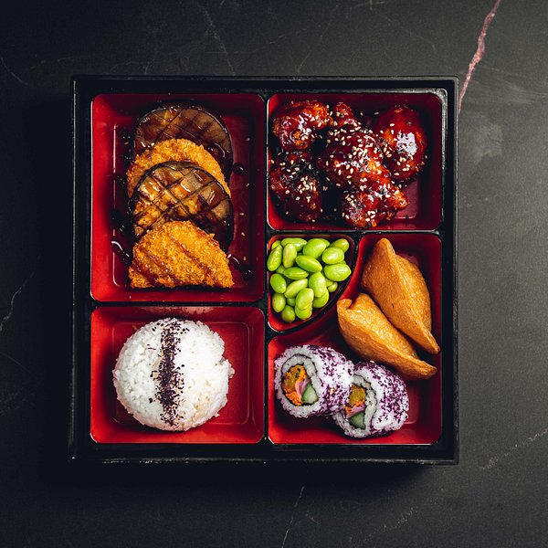

Chicken Teriyaki – Sweet & Savory Classic

Chicken Teriyaki is a global favorite, known for its glossy glaze and balanced sweet-savory taste. The dish beautifully combines tender chicken with a rich sauce that caramelizes to perfection.
Rooted in traditional Japanese cooking, teriyaki reflects the harmony of simple ingredients transformed through careful technique and flavor balance.
The Essence of Teriyaki Sauce
Teriyaki sauce is crafted from soy sauce, mirin, sugar, and sake. When simmered, it thickens into a shiny glaze that coats the chicken.
This glaze delivers the signature sweet and savory flavor that defines the dish.
Choosing the Right Cut
Chicken thighs are commonly used for their juiciness and flavor, though chicken breast can be used for a leaner option.
Proper searing locks in moisture while creating a golden exterior.
Cooking Technique
The chicken is first pan-seared, then simmered in teriyaki sauce until fully cooked and glazed.
Continuous basting ensures the sauce clings evenly, enhancing both flavor and presentation.
Serving Presentation
Chicken Teriyaki is typically sliced and served over steamed rice, allowing the sauce to soak into the grains.
Garnishes like sesame seeds and chopped green onions add aroma and visual appeal.
Perfect Pairings
- Steamed white rice
- Stir-fried vegetables
- Miso soup
- Pickled cucumbers
- Green tea
Tips for Best Results
Avoid overcrowding the pan while searing. Let the sauce reduce slowly to achieve the perfect glossy finish.
Homemade sauce offers the most authentic taste and balance.
A Timeless Sweet & Savory Delight
Chicken Teriyaki captures the heart of Japanese comfort cuisine—simple, flavorful, and deeply satisfying.
With its rich glaze and tender texture, this classic dish continues to win hearts across the world and remains a staple in home kitchens.